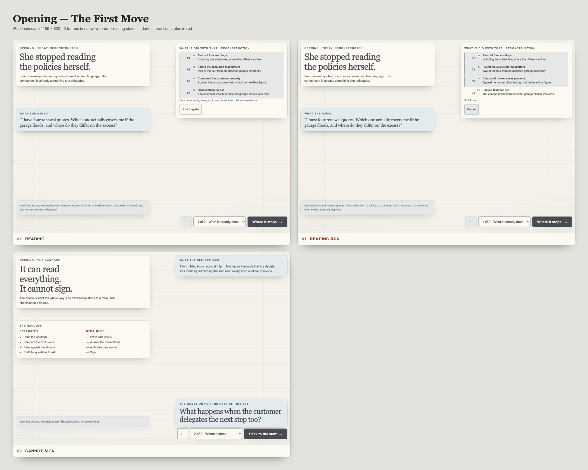
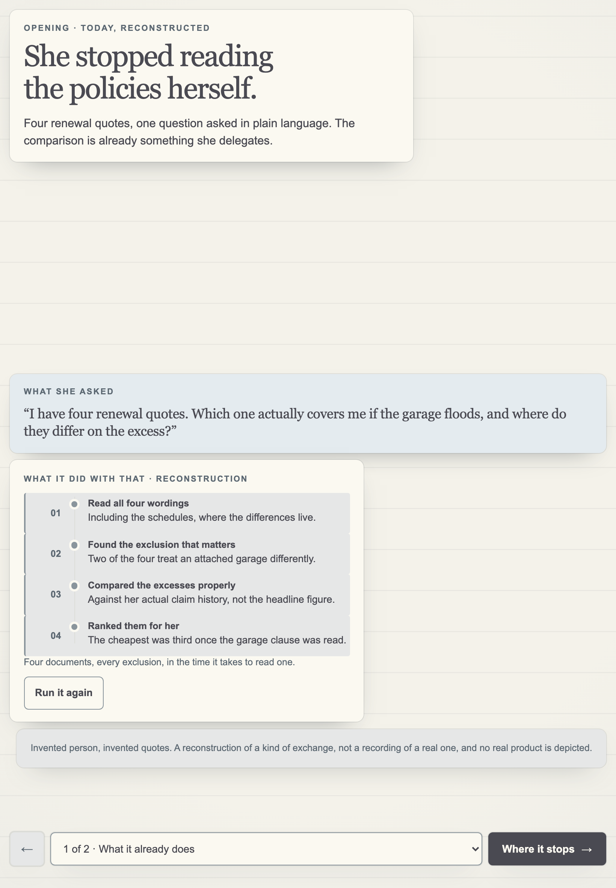
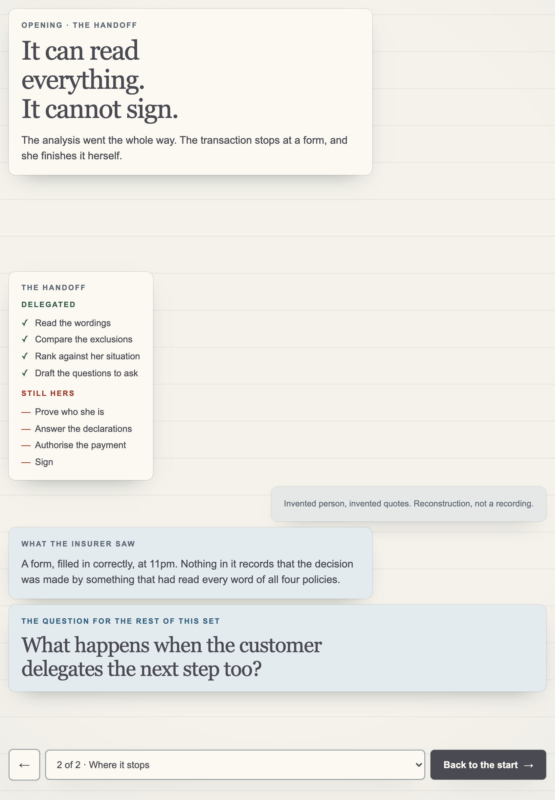
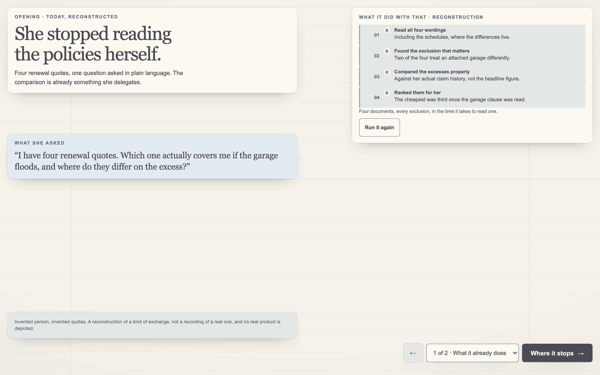
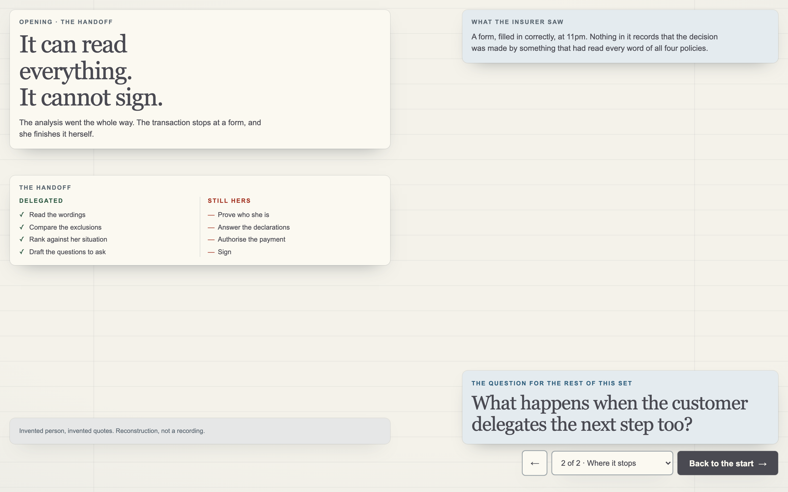
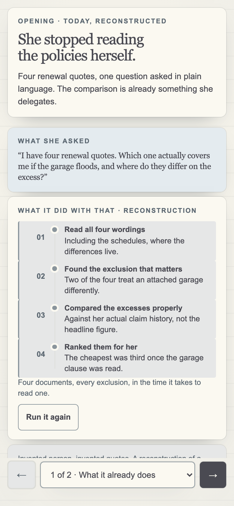
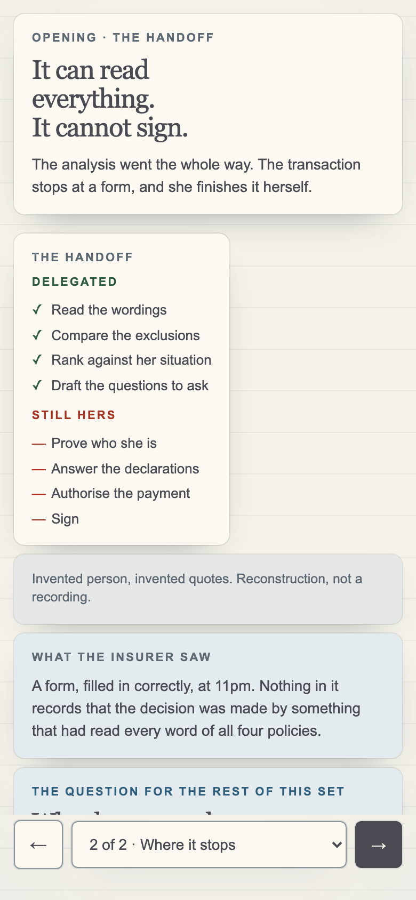

iteration-001 · 01-opening
| Live | https://fieldnotes-khaki-three.vercel.app/prototype/first-move/ |
|---|---|
| Commit | 98bbf80 — 98bbf80c56ce294f427665dc7ec07279dfea14c9 |
| Captured from | the deployed build at that commit |
| Folder | 01-opening · live slug first-move |
| Edition ink | #4A4A52 |
| Screenshots | 9 |
An assistant that can read every policy in the market, and the one thing it still cannot do.
Opens the session. Establishes the present tense — what already happens today — before anything speculative is shown.
01 · Reading She already delegates the reading. Something compares everything, in seconds, without getting tired.
02 · It cannot sign Reading is solved; committing is not. Closes on the question the rest of the morning answers: what happens when the customer delegates the next step too?
Run it again Replays the reading pass, so the room sees the speed rather than being told about it.
Factual
Illustrative
Hypothetical
Every screen states once, plainly, that its content is invented. No real insurer's premium, withdrawal, book or pricing decision appears anywhere, and no invented figure is attached to a real company's name.
Reads as current-state AI shopping, and the handoff is explicit rather than implied. The closing question is a direct setup for OpenCover — the bookend only works if this is walked first.
Tested against the deployed build before any screenshot was taken. The harness asserts computed font-size, contrast against the composited rendered background, touch-target size, clipping, overlap, horizontal overflow, console errors, hover dependency, tablet chrome, bottom gesture-strip collisions and narrative reading order.
| Class | Exact CSS px | Role | Result |
|---|---|---|---|
| iPad landscape | 1180 × 820 | canonical review surface | pass |
| iPad landscape, browser chrome | 1180 × 740 | primary, worst-case height | pass |
| iPad portrait | 820 × 1180 | primary | pass — scrolls, permitted |
| Desktop | 1440 × 900 | secondary | pass |
| Desktop | 1920 × 1080, 1280 × 720 | secondary | pass |
| Mobile | 390 × 844 | secondary | pass — scrolls |
| Mobile edge | 360 × 740, 430 × 932 | edge | pass — scrolls |
ipad-landscape (3)
first-move-01-reading-ipad-landscape.pngfirst-move-01-reading-run-ipad-landscape.pngfirst-move-02-cannot-sign-ipad-landscape.pngipad-portrait (2)
first-move-01-reading-ipad-portrait.pngfirst-move-02-cannot-sign-ipad-portrait.pngdesktop (2)
first-move-01-reading-desktop.pngfirst-move-02-cannot-sign-desktop.pngmobile (2)
first-move-01-reading-mobile.pngfirst-move-02-cannot-sign-mobile.pngContact sheet: contact-sheet-ipad.png (also first-move-contact-sheet-ipad.png)
patterns /state[^a-z0-9]{0,3}farm/i
— the client's two-word name: the words adjacent, with any separator
or none, in any casing. The spellings are deliberately NOT listed
here. This file is served publicly, and an enumeration of forbidden
spellings is still an instance of the thing it forbids.
— plus the initials when used as a client shorthand
scope page copy · HTML · CSS · JS · comments · metadata · page title · URL slug
filenames · folder names · aria-labels · this document · PNG metadata
rendered text of every captured state
result 0 matchesCopy uses the carrier, the insurer, an insurance partner. Where an insurer needed a name, an invented one is used.






